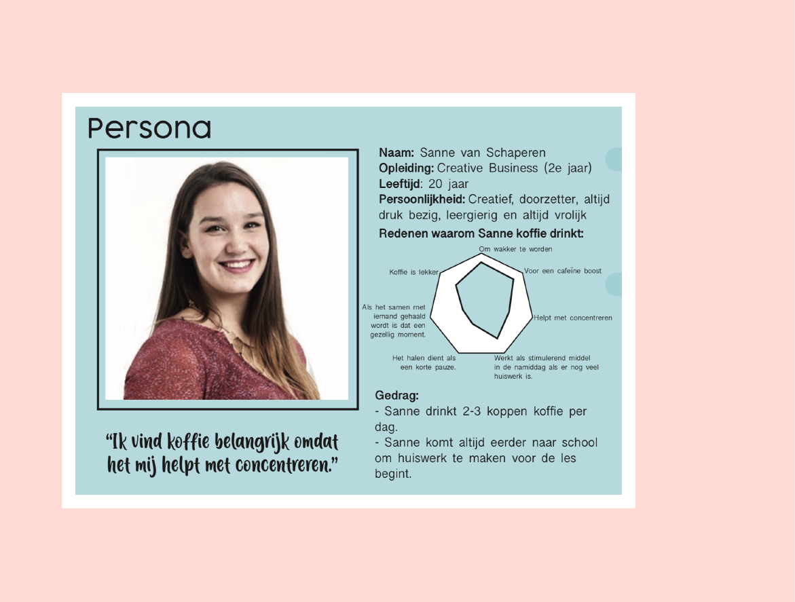
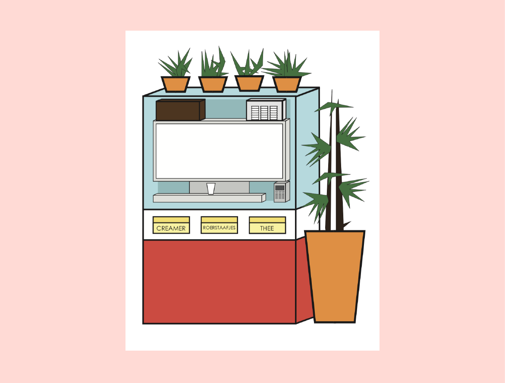

Situatie
Deze opdracht heb ik uitgevoerd voor het vak User Centred Design, wat zich focust op het ontwerpen voor mensen, en daardoor ook erg in de UX richting is.
De opdrachtgever was MAAS International, die de voorziening van koffieautomaten door heel de HvA doet. Er is veel onduidelijkheid in de interactie van de koffieautomaat, en dat zorgt voor een niet perfecte ervaring voor de studenten en docenten die de koffieautomaat gebruiken.
Taak
Voor MAAS International moesten wij studenten onderzoeken hoe wij de interactie met de automaat konden verbeteren. Er waren een paar onduidelijke puntjes in de interactie en vandaar kwamen wij door veel onderzoek uit op een herontwerp.
Ik moest onderzoeken hoe de machine's nu worden gebruikt er naar aanleiding daarvan ook een herontwerp maken. Ik wilde een simplistisch maar interessant herontwerp maken, wat voor de studenten makkelijk bruikbaar is en een goede look & feel heeft.
Activiteit
Ik heb veel verschillende soorten onderzoek gedaan zoals bijvoorbeeld een desk research en een observatie. Ook heb ik een persona opgesteld en een Pakket van Eisen aan mijzelf toegewezen.
Ik heb eerst alle onderzoeken gedaan, hieruit bevindingen gehaald en vervolgens een Pakket van Eisen opgesteld. Daarna ben ik waar nodig nog meer onderzoek gaan doen en ook begonnen met ideeën bedenken voor mijn herontwerp.
Resultaat
Doordat ik veel bezig was met onderzoeken heb ik hieruit veel informatie kunnen halen en dit toe kunnen passen in mijn ontwerp. Dit vond ik erg fijn werken.
De opdrachtgever vond dat het duidelijk was dat ik er veel werk in heb gestoken en dat ik een mooi resultaat heb opgeleverd.
Reflectie
Ik denk dat dit project, vooral de poster, goed laat zien dat ik erg procesgericht werk. Ik doe dit werk echt in fases, begin met onderzoeken, bekijken wat mijn bevindingen zijn, dit allemaal duidelijk maken en dan vervolgens herontwerpen.
Bekijk de hele poster in dit PDF Bestand